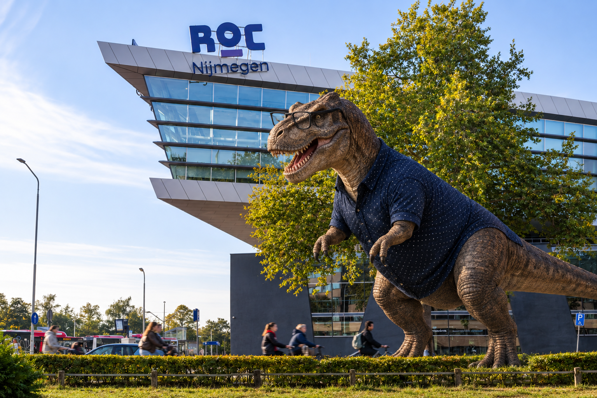

Open dagen
- 29 januari van 16:00 tot 20:00
- 19 maart van 16:00 tot 18:00
- 22 juni van 18:00 tot 20:00
De opleiding Software Developer bij ROC Nijmegen is een mbo-opleiding op niveau 4. Tijdens deze opleiding leer je hoe je websites, applicaties, mobiele apps en andere software ontwikkelt. Je leert niet alleen programmeren, maar ook hoe je software ontwerpt, test, onderhoudt en beveiligt. Hierbij werk je met verschillende programmeertalen, ontwikkelomgevingen en technieken. De opleiding is gericht op zowel theorie als praktijk. Je werkt aan opdrachten en projecten waarbij je leert om zelfstandig en in teamverband software te ontwikkelen.
Een Software Developer houdt zich bezig met het bedenken, ontwerpen, bouwen en onderhouden van software. Dit kan bijvoorbeeld een website, webshop, mobiele applicatie of een compleet softwaresysteem zijn. Een developer analyseert problemen, schrijft code en test of een applicatie goed functioneert.
Tijdens de opleiding doe je praktijkervaring op door middel van projecten en stages. Je leert hoe het er in een echt ICT-bedrijf aan toegaat en hoe je samenwerkt met andere ontwikkelaars en opdrachtgevers. Stage vindt plaats in leerjaar 2 en 3.
Tijdens de opleiding Software Developer volg je naast programmeervakken ook algemene
ICT-vakken en basisvakken.
Bij ICT leer je meer over computers, netwerken, software en de werking
van digitale systemen.
De basisvakken zoals Nederlands, Engels, rekenen en burgerschap helpen je bij
het ontwikkelen van je communicatie, rekenvaardigheden en algemene kennis.
Deze vakken bereiden je
voor op je toekomstige werk als Software Developer.

Een veelgebruikte taal voor data, AI en webapplicaties.
De taal voor interactieve en dynamische websites.
De basis van elke website, voor structuur en styling.
Een veelgebruikte taal voor grote applicaties en Android apps.
Een taal van Microsoft, veel gebruikt voor Windows apps en games.
Een taal die veel gebruikt wordt voor websites en webapplicaties.
Veel opdrachten en leermiddelen zijn digitaal. Daarom heb je een geschikte laptop nodig. De precieze richtlijnen kunnen per opleiding verschillen.
Heyendaalseweg 98
6525 EE Nijmegen
Website: www.roc-nijmegen.nl
E-mail: info@roc-nijmegen.nl
Telefoon: 024 - 890 48 00
Heb je vragen over opleidingen, open dagen of aanmeldingen? Neem contact op met ROC Nijmegen.